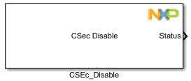
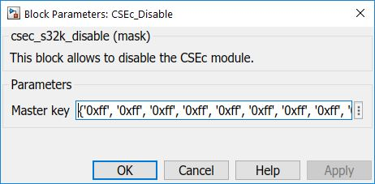

CSEc Disable Block
This block allows to disable the CSEc module.
Note:This is only available for S32K14x parts (no support for S32K11x).
Disable of the CSEc module is done by erasing all keys using a Challenge-Authentication process. No individual key can be erased, it is only possible to erase all keys together.
The CSEc has implemented this mechanism by way of 2 commands. These are CMD_DEBUG_CHAL and CMD_DEBUG_AUTH.
- The CMD_DBG_CHAL command is issued to request a random number (let say CHALLENGE – 128-bits).
- Now, CMD_DBG_AUTH command is issued to return the authorization parameter (let say AUTHORIZATION – 128bits). It is calculated as below
K = KDF(KEYMASTER_ECU_KEY, DEBUG_KEY_C)- KEYMASTER_ECU_KEY – MASTER_ECU_KEY value
- KEY_UPDATE_MAC_C – Constant value defined by HIS-SHE specification as :
0x01035348 45008000 00000000 000000B0
- CMAC is performed over CHALLENGE concatenated with UID using key-K
- Reset the device.
Block Image
Inputs:
- None
Outputs:
- Status (bool)
- true - CSEc module was disabled
- false - CSEc module couldn't be disable
Parameters and Dialog Box
Master key
The Master key is need to erase all keys using Challenge-Authentication process.
The value must be a cell-array with hexadecimal number as string elements.
Block Dependency
- None
Block Miscellaneous Details
- None